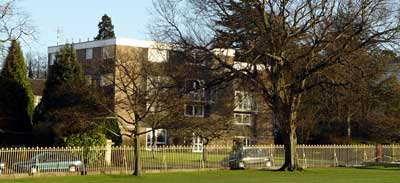
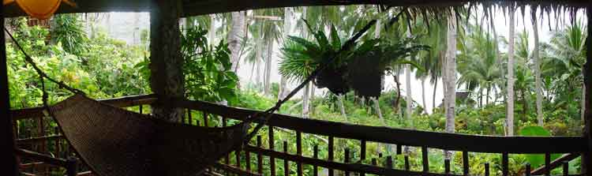
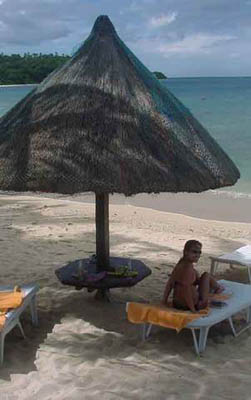
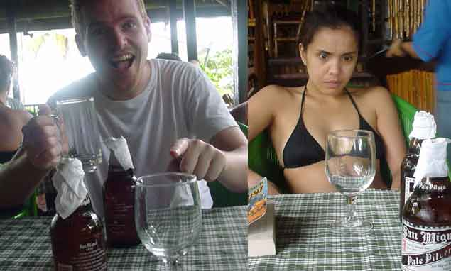
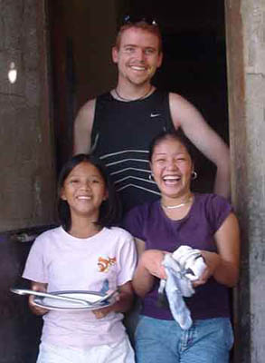
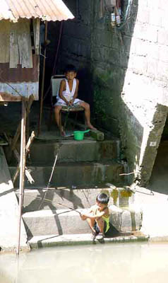
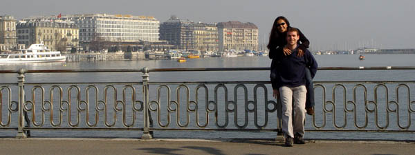
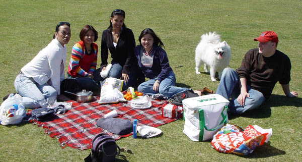
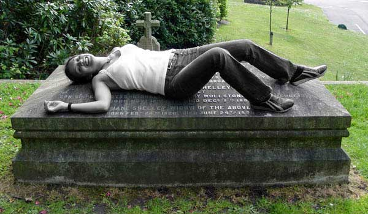

06 November 2003
I find it hard to decide how to structure these things. For lack of any better method I'm writing them pretty much chronologically. But sometimes it slips into stream of consciousness type thoughts so forgive me if I start to get a little incoherent. It's also a bit of a problem when I leave it so long between updates. So much seems to happen, it's hard to summarise it all. Shame I'm so lazy I guess...
Mind you, it's only been 9, 10, 11, 12 months since my last verbiage (shit, where'd that year go?). That's enough time to germinate a human being. Crikey! What have I been doing?
Well, if you are at all interested, here are some quick links to the content in this travelogue;
It's only the first half of 2003 though. But I haven't finished writing about the other stuff, so here's what I've got to date.
I'm changing my name. No longer ShadyDave, I'm Bad Boy Beer™. This is due to me now officially being a criminal.
Last year I got pulled over for doing 105mph in the porker. And I've just been to court to have my licence taken away. (Only for seven days though) I was a bit stressed out over the whole process, but hey, perhaps it'll learn me a lesson. (Not!)
What was lovely though, is I lost my licence for the Easter break. Because you'd never want to drive anywhere while the sun is out and you have four days off, right? Why couldn't it have been the previous month? I didn't even use the car then...
Oh well... never mind.
I'm not going to bore you with the details apart from it was a completely empty stretch of the M5 and I didn't overtake anybody. I went for a short squirt over a mile or two, then, when I reached a group of four cars, I slowed down and went at their speed. About 30 seconds later, someone speeds up behind me, then on come the blues. Gutted!
One thing that was a little funny, is the patrol car's engine was smoking furiously when I went and had a chat to the boys who nicked me. They'd blown up their car and it wouldn't start again. Serves them right. They shouldn't have been speeding in the first place. Perhaps if I'd not slowed down, I'd have gotten clean away. I'll just have to make sure I'm a good boy from now on.
A final observation. I know the Magistrates aren't exactly meant to be chummy. But the guy I had was a complete prick. (Just thought I'd mention that)
First thing on the agenda after the last travelogue is we managed to find a house to buy. Well, if I was living in New Zealand I'd mean a house when I say a house, but here in the UK what I really mean is a small-ish 2 bed apartment for an exorbitant sum of money. I don't know what half a million Kiwi dollars buys back home, but I'm sure it gets a lot more than it will this side of the planet. Still, for the most part we are pretty happy with the place and I think we might even be able to afford some furniture in a few months. (actually, now that I'm editing this a few months later, I can say yes, we did manage to afford some furniture. But we had to stop eating to do so...)

Our humble abode. Our flat in in the top left corner.
I don't often convert back to Kiwi dollars. Not after four years abroad. You just wouldn't buy anything here if you did keep comparing. But sometimes you can't help it. Especially when you are forking out some outrageous sum of money for this or that and you know that you could have got the exact same thing (or better) for almost half the price back home. Just part of the joy of living here I guess. :)
Actually, I wouldn't recommend this diet to anyone. Even Atkins is preferable (at least then you get to eat fatty food). It's a pretty awful way to lose weight, but here goes.
Not really very pleasant. And it did ruin the few days I was in Dubai. I spent most of the time in bed. And I couldn't enjoy any hummus and lamb, or zinger-twister or any of the other food I miss so much from Dubai.
At least it was at the end of the holiday, that is all I can say. I would have been gutted to get sick on one of the first few days.
We flew straight out to the Philippines from Heathrow (stopping once at Dubai to switch planes). Funnily enough, Emirates gave us metal utensils for the Dubai -> Manila leg. Post September 11, that is a pretty rare occurrence. Maybe it is just for flights to/from UK/US that you have to eat with shitty plastic knives and forks. I call it overkill, as even the metal utensils aren't exactly super-weapons. Less lethal than the airline food surely...
First thing we did after arriving in Manila is go check in to our hotel, have a
quick kip, then head out for a drink. I tasted my first San Miguel Super-Dry.
And it was good.
Something that is pretty cool here is the licensing hours. Not as backward as
the UK's. The bar we were in stayed open until 5am. That is late enough for the
hardest drinkers... (pubs closing at 11pm is a bit of a joke really)
That said, we've since been to Cardyff, where the pubs don't tend to
close until 2am. Which is something the Welsh do better than the
English. :-)
Next day we headed off for a few nights at Coco beach. We stayed in our little bungalow, a minutes walk from the beach. Getting into the holiday mood with nothing but beach, swimming, sun, food and the occasional San Miguel.

The view from our little hut. The beach is about a one minute walk down the
path.
We caught the water-taxi to Puerto Galera where we were accosted by a ton of tricycles asking us if we'd like to go to White Beach. Liezl instantly regretted having a puti (white) boyfriend and pretended she didn't know me. We caught a tricycle to the town centre to score some lunch.
We wandered around the street markets, having little snacky-things from the different stalls. I remember the fish balls being especially delicious. I scored some fresh juice, which was served to me in a plastic bag and straw.
Something I noticed is that animals have a pretty rough time here in the Philippines. We saw one dog get run over three times. It's legs were completely useless when we first saw it, and it managed to get under the wheels of almost every vehicle that passed. (No such thing as the SPCA here I think)

Our own little beach. Was a lovely cool 30-ish degrees.
We caught one boat out to a 'private' beach with about 10 other people. The beach was fantastic. So much gorgeous coral and water-life like I'd never seen before. What was mildly amusing (but mostly painful) was the horde of boats that arrived shortly after we did. The enterprising locals figured out that they can do a roaring trade by following the now-trapped tourists and pester them until they've either bought something from everyone, or gotten completely wound up and told everyone to piss off. I never quite got to the point of telling them to bugger off, but it was pretty annoying.

This was funny. I always got the chilled pint and Liezl got the warm wine glass.
Even though we both drank San Miguel.
At the end of the three days I think we'd read all our books and were about beached out. Don't know how to relax perhaps? But whatever, it was time to head back to Manila and hire a vehicle to drive out to Liezl's hometown of Mabitac.
Hiring a vehicle was an education. We first checked out the prices
at the airport. They weren't bad, but there was all sorts of issues
like what cars were available, and what credit cards they did or
didn't take. (didn't like Visa much)
We also had one guy who was insisting on being our driver for the
full 10 days. He'd sleep in the car and drive us wherever we wanted
to go. All included in the price of the vehicle.
In the end, we went into town and found a brand new van (similar to a landcruiser, but only 2WD) for rent that was fully half the price of the old banged-up Toyota tercels at the airport. Had to pay in cash, and promise not to rev the shit out of it, as it was still being run-in. But it was a sweet ute. Even had an in-car video player.
Driving wasn't much of a culture shock, not after driving in Dubai. In fact I quickly got used to overtaking in the fourth lane. (I think it's called the shoulder in New Zealand) The hardest thing was responding to Liezl's directions. "Turn right here", she says, while meaning left.
We made it to Mabitac without killing anyone, which is quite an achievement really. I quickly learnt to honk the horn every time we passed a horde of children along the way. (Not that they paid me much attention)

Two of Yey's Nieces. Sandrine and Citadel. We are just getting ready to eat.
We spent just over a week in Mabitac. Loved it. There is a 17th century church built on the hilltop (ostensibly to protect it from the flooding). Liezl showed me the spot where their priest was killed by a burglar. (bit rough that)
One of the first things I saw in the village was about 20 kids all dancing. That is something I loved about the place. Kids dance a lot here.
We just mucked around most of the time. I met some of the local lads, played pool and all that. We drank San-Miguel (costing all of 13 Pesos, about 40 cents NZ) at night outside in the street at night while ladies came round selling puto (rice cake, which I've fallen in love with) and balut (partially developed duckling, still in the egg, which I couldn't quite bring myself to eat).
One night there was a wake down the road. Which seemed to involve a lot of food and people holding a mini street party. The casket is displayed inside and the ladies sit around and gossip, while the men-folk gamble at mahjong.

I don't know. Shopping for lunch? Didn't see them catch anything, but sometimes
that isn't the point
Occasionally, when I needed money, we'd go hunting for a money machine. It was a little more difficult getting a compatible one than I thought. But that's cause I've only got a cirrus/maestro card, not a link one any more...
After Mabitac it was time to spend a few more days in Manila. We returned our vehicle, then checked in to the Manila Peninsula Hotel. A rather swanky joint which was quite acceptable. Unfortunately, we never seemed to wake up in time to enjoy the free breakfasts, but never mind... There was tons of good food on offer outside.
Shopping in Manila was a little crowded. Also, whenever you enter a mall, you get searched by security guards. That's been the case since well before Sept 11th though.
I think we just spent the days shopping, and the nights out eating/drinking. At least until the last day. That's when I spent the entire day in bed delirious apparently. (I honestly remember very little of it)
Fortunately the doctor at the airport cleared me for travel to Dubai. I was so sick, all I wanted to do was lie down and die. But I toughed the doctors examination out saying that I was feeling a lot better and it was just something I ate. Just as well that whole SARS scare hadn't happened yet, otherwise I'd have definitely been held back for a few days.
Emirates upgraded us to Business (I think because we were last on the flight) and really looked after me, making sure I was as comfortable as could be. I still miss working for them, as they are a fantastic airline.
And like I said, Dubai was pretty uneventful for me. I spent almost the whole time in bed, only just managing to eat a little on the last day there. Sob!
Still, I had a fantastic trip, and would love to go back to both the Philippines and Dubai soon.
Fabrice, one of the guys from work, invited Liezl and I over to Switzerland for his 30th birthday. It was a last-weekend-of-the-season skiing holiday.
Switzerland is so cool, because Liezl doesn't need a visa to go there. As long as you have right to remain in the UK, you can obtain a visa on arrival. I, of course, have no issues with visas once again.
I think that would be one thing I change when I am world dictator. I'd make it that anyone can live/visit/work anywhere, no matter where you were born. We should be people of the planet, not isolated little countries.
But anyway, enough babbling. We went to Geneva, and the first thing I found out after arriving, was the hotel that I booked (In Geneva) wasn't in Switzerland. It was in France. Bloody hell! That's because the Swiss/France border cuts right through Geneva. (Shame I hadn't boned up a bit more on my geography eh?)
Since Liezl wasn't allowed in France without applying weeks before for a visa, we had no choice but to book another hotel in town. (This time on the Swiss side of the border) Fortunately, the hotel we found was in a great location, right next to food and shopping, so it worked out pretty well.
We met up with everybody else at the Airport the next morning and our convoy made it's way to Fabrice's parent's place near Lausanne. Their house overlooked Lake Geneva and the mountains beyond. It was fantastic to see proper mountains again. The whole place seemed similar in beauty to the South Island. Only the castles the dotted the landscape are several centuries older than anything we've got in NZ of course.
After a massive feast, we completed our journey to Sion where we were staying. We could see the Matterhorn from the chalet where we stayed.
The next three days were basically eat/snowboard/eat/snowboard/drink/eat/drink/nap then repeat. Getting back to Geneva was actually a relief. I'm amazed how much energy Fabrice and the others had to go snowboarding while having so few hours of sleep. All very Kenco Rappor - Live now, Sleep later. Only I'm pretty useless without at least 6 hours of sleep.
I think I've become bit of a snow snob as well. Since it was March, the snow was a thin covering on the ground. It was slushy and icy. Not much fun for me, so I didn't even bother getting a lift pass. Just stayed on the baby slopes with Liezl playing around like 12 year old kids. She gave up snowboarding and hired some skis which she took to pretty much instantly, having not much luck with boarding.
Back to Geneva though. We stayed another night there before heading home to Blighty. Ate dinner in a fantastic little pizzeria. Actually, that is one of the odd things about the Swiss. They seem to not so much have their own cuisine, but rather steal other nationalities food, and just do it better. French, Italian, German... doesn't matter. They'll take what's best out of the lot, and do it even better.

Wandering around Geneva.
I know it sounds silly, but so far I've not seen any beaches in the UK. Sure I've been to several coasts (West, South and East) But have yet to see something I'd call a beach.
I have seen cliffs, pebbles, piers, mud-flats and rocks in a sea-side setting. But I've yet to see that crucial element that I thought was always an essential component of a beach.
Sand. Where the hell is it all? There are a few sandy beaches around (apparently). I just haven't been to one yet.
Anyhow, a group of us decided to go for a burn to the lovely coastal town of Bournemouth for a picnic.

Having a wee picnic at Boltons Bench.
The trip down was a laugh. Originally, we were going to hire a van, but that fell through, as it was a long weekend (bank holiday) and there were no vans available at all. So in the end, we only had 2 cars going down (not much of a convoy). But it was a lovely day, so why not.
First stop was Stonehenge for the people who hadn't been there before. This was the first time I'd seen it crowded too, and since it was my third trip, I just stayed in the field (the car park was full) and chatted to other people hanging around.
Next was a sweet drive through New Forrest. Pretty. Horsies. Trees. Grass. Truth is, I wasn't really concentrating on the scenery. I was too busy throwing the car around corners. (There were some nice windy stretches of road just asking for it)
After getting to Bournemouth, I found that the beach itself was a bit of a let down. Absolutely packed full of people with a tiny strip of sand. I guess seeing beaches like this really make me think how spoilt for choice we are in NZ.

Liezl looking pretty scary herself, lying on top of Mary Wollstone Shelley's
grave - in Bournemouth. (Author of Frankenstein)
Yeah, I don't think many of the old Air Force boys I was down in Wigram with will believe it, but I finally finished my 1040 Communications Skills. Ergo, I now have my NZCE. Talk about procrastination.
So there it is... The result of over 12 years of effort. HA! Did I really start the thing back in 1990? My goodness!
I'd better hope I never try and do a degree. How will I ever finish my last paper with all the racket that my Grandchildren make?
I really do have to be getting away now. I've still got our Greece trip to write up, and shortly I'll have a New Zealand trip to write about (after a three year absence). I'm really looking forward to it. Hope to catch up with as many people as possible in the short time I'll have available.
Best wishes to everyone,
Ingat!
BadBoyBeer™